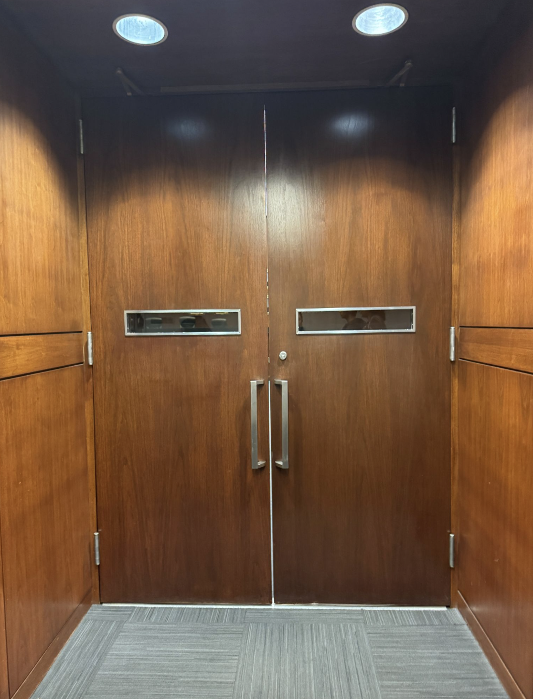
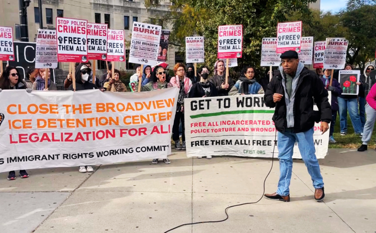

For Stanley Howard, who spent 39 years in prison after being tortured into a false confession by Chicago police officers, the root of the problem was never just one bad actor.
“It wasn't just crooked cops,” Howard said. “It was all three branches of government.”
Since Howard was first tortured in 1984, Chicago's police accountability system has been repeatedly reformed. Now, its transparency is in question as the Illinois Supreme Court considers whether arbitration hearings in serious police misconduct cases can be shielded from the public.
The appeal stems from a 2024 Cook County Circuit Court ruling that allowed officers facing termination or suspension longer than 365 days to choose arbitration instead of a Chicago Police Board hearing but required those arbitration hearings to remain public — a requirement the Illinois Appellate Court affirmed last August. The Police Board has adjudicated serious disciplinary cases in public hearings since the 1960s.
The appellant, The Fraternal Order of Police, Lodge 7, argues that officers bargained for private proceedings under their union contract. Union president John Catanzara Jr. did not respond to requests for comment.
The Illinois Supreme Court's decision leaves 21 cases pending — including seven seeking the termination of officers accused of unjustified shootings. Police Board hearings cannot proceed without the accused officer's consent, and arbitration hearings cannot occur until the court rules.
Max Caproni, executive director of the Chicago Police Board, voiced concerns about arbitration. Since arbitrators are selected with agreement from the city and the police union, “there's an incentive there to kind of split things,” he said.
Police Board members are appointed for fixed five-year terms, and therefore do not have an incentive to please both sides, according to Caproni.
“Not to say that (the Police Board) is perfect,” he said. “But that's a big problem with arbitration.”
The current legal dispute sits within Chicago's broader system for police accountability, a system that has evolved from decades of police abuse.
From the 1970s into the 1990s, Police Department Cmdr. Jon Burge and his detectives used electric shock, suffocation and other torture methods to extract confessions. More than 120 people, predominantly Black men, were tortured according to the Chicago Torture Justice Center.
Mark Clements, who spent 28 years in prison after being tortured into a false confession at age 16, said reform has rarely come from institutions without outside pressure.

“None of these things were freely given,” he said. “It was given under a lot of sweat and misery by little poor old mothers because their kids had either been assassinated by members of our police department, or they had been wrongfully detained.”
In response to police torture, the Illinois Torture Inquiry and Relief Commission was created in 2009 to review police torture claims and refer credible cases back to the courts.
Paul Haidle, communications director and supervising attorney with the commission, said that because traditional pathways often fail to address police torture claims, the commission may be a person's last chance for justice.
![A timeline of the TIRC (Torture Inquiry & Relief Commission, 8 members): 2009 — created to address tortured confessions by the Chicago Police Department related to Chicago Police Commander Jon Burge; 2010 — the governor's office appointed the first commissioners; 2012 & 2013 — commission lost funding but began reviewing claims without adequate funding or staff; 2016 — Public Act 99-688 was passed by legislature, removing the requirement that claims involve Jon Burge and his subordinates; 2019 — with the new deadline of Aug. 10, 2019, to file claims, the commission went from approximately 80 pending torture claims to more than 600; 2025 — as of December 2025, the more than 600 pending torture claims have been reduced to approximately 381 claims remaining.](images/tirc-timeline.png)
“There is essentially no other way if a person has exhausted their appeal and any post-conviction filings,” Haidle said. “This may be the only other avenue available for relief related to the torture aspect.”
More recently, a court order — known as a consent decree — was enacted in 2019 following a federal civil rights investigation that determined Chicago Police Department officers used unreasonable deadly force.
The consent decree requires reforms of CPD's policies, training and accountability mechanisms. According to WTTW News Reporter Heather Cherone, this decree is one of the most complicated in history.
A Timeline of Accountability Bodies
-
1961
Chicago Police Board
The Chicago Police Board was founded following the 1960 Summerdale scandal, where eight officers were caught running a burglary ring.
-
1974
Office of Professional Standards
On the recommendation of a panel convened by U.S. Rep. Ralph Metcalfe in 1972 to investigate police abuse, the city creates the Office of Professional Standards, a civilian-staffed misconduct unit housed inside CPD.
-
2007
IPRA replaces OPS
After mounting evidence that OPS shielded officers in shooting cases, the city dissolves it and creates the Independent Police Review Authority outside CPD.
-
2016
COPA created
A task force report concludes CPD has “no regard for the sanctity of life when it comes to people of color.” On Oct. 5, 2016, the Council replaces IPRA with the Civilian Office of Police Accountability (COPA) to provide more transparency and independence in investigating police misconduct.
-
2019
Federal consent decree in force
A consent decree is entered in federal court and takes effect under U.S. District Judge Robert M. Dow Jr. An independent monitoring team begins semi-annual compliance reports.
-
2021
Empowering Communities for Public Safety
The City Council passes the Empowering Communities for Public Safety Ordinance 36–13. It creates a seven-member Community Commission with power over CPD policy, plus 22 resident-elected District Councils — three per police district.
-
2024
Commissioners seated
The District Councils nominate and Mayor Brandon Johnson appoints the first permanent seven-member Community Commission, made up of civilians.
“The CPD would tell you that they haven't even really begun to make those changes,” Cherone said. “Police departments, especially the Chicago Police Department, (have) been notoriously resistant to oversight.”
As of Dec. 31, 2025, the Independent Monitoring Report said CPD is in full compliance with 25% of the decree's requirements.
Chicago has also expanded civilian oversight through the Community Commission for Public Safety and Accountability, a body whose seven members are nominated through the District Council Nominating Committee and appointed by the mayor. The permanent commission began work in 2024.
Among other powers, the commission has the ability to set and approve policy for the Police Department and the Police Board.
Frank Chapman, educational director and field secretary of the Chicago Alliance Against Racist and Political Repression, has pushed for civilian control over the police since his wrongful conviction in 1961.
“It was a 10-year struggle to get something done about this,” he said.
Chapman said he sees it as “significant reform” to have a civilian body that can “not only oversee police policies, but initiate policies of their own.”
Howard, who spent 16 years on death row, said current changes are not enough compared to the human cost of police misconduct.
“My daughter and my sons had to grow up without their dad and live with the fact that their dad was on death row,” Howard said. “How much stress did that put on my mom to lead to an early death?”
As the pursuit of police accountability continues, the Illinois Supreme Court will soon decide whether the most serious police misconduct cases will be open to the public.
“Whether or not the new structures will prevent the next big scandal,” Cherone said, “I don't have a crystal ball.”
###
This website was compiled using Claude Code, and the interactive timeline element was created by AI, with all the text in the timeline edited numerous times by humans. The full article and the TIRC timeline were fully written by humans, and all the text on the screen has been edited by our team and vetted for accuracy. If you’d like to explore the raw data that Claude compiled, please visit this link. Thank you for exploring this article.